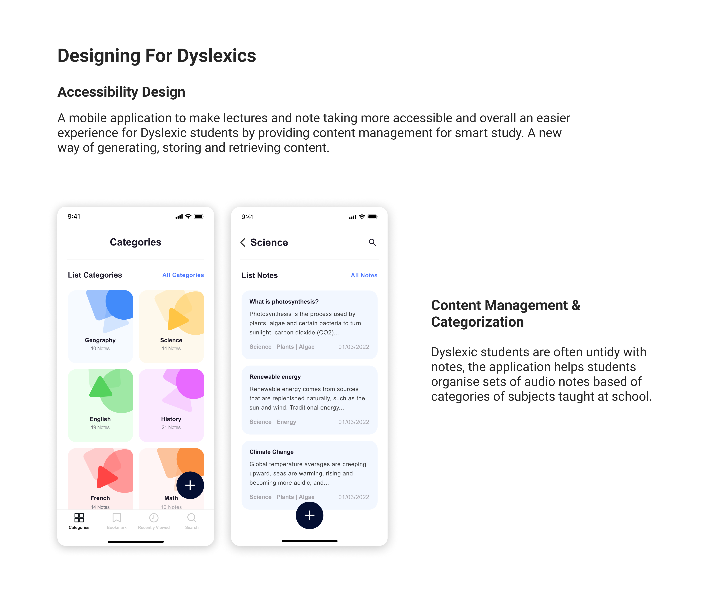
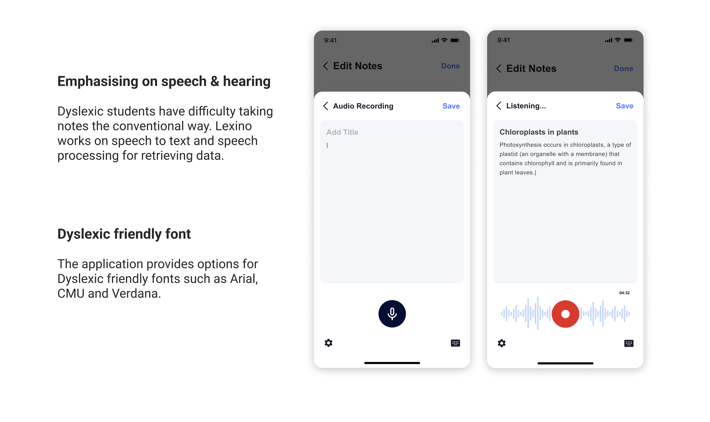
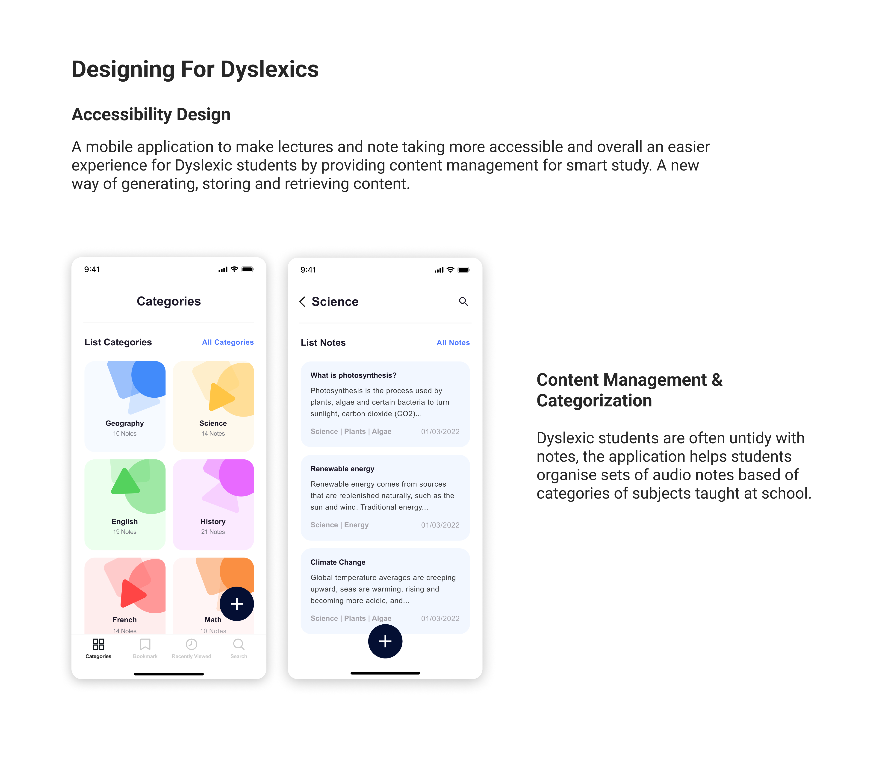
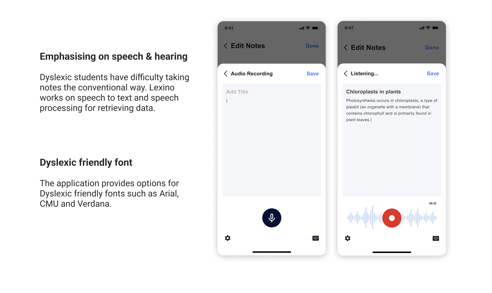

Lexino
Designing a tool to help Dyslexic school children learn and follow class lectures the same way their friends do.

Creating Equity For Dyslexic School Children
Dyslexia is a cognitive learning disability where the brain has difficulty with phonological processing, or translating words into sounds. As a result, reading becomes difficult. Dyslexic school children are specifically at a disadvantage when it comes to class lectures.
Problem Statement:
How might we help dyslexic school children retain information and take better notes during classes in an organized way that can be reviewed later.
Solution:
Dyslexia school children have difficulty taking notes the conventional way. Audio notes with recording will allow children to focus on the live lecture and be engaged, instead of struggling to keep up with writing, spelling, hearing and reading things on the board. Speech recordin and processing for retrieving data can help ease the learning process for Dyslexic children.
My Role:
Research, Interaction Design
Duration:
14 Weeks
Advisors:
Wenting Zhang
 



Content management & categorization
Begin audio recording
Start recording
Review and end recording

Labels for recorded notes
Lexino Prototype
Take-aways & Next Steps
1. Dyslexics experience different levels of disability, so interviewing a spectrum of Dyslexics was helpful designing for accessibility.
2. Consider how visual representations, such as images, sketches and mind maps will be added and show up from the visuals tab.